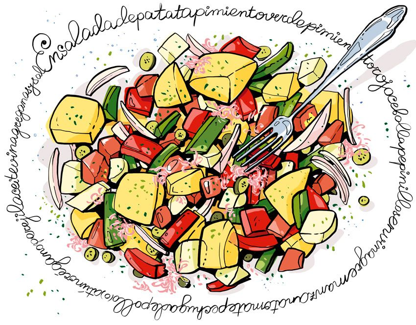

All Recipes

Known as nature’s power bar, bananas are packed with carbohydrates and potassium, which supports nerve and muscle function. Carbs are fuel for our body and brain, and they account for 90% of banana calories.
Because they are full of fiber, oats release carbohydrates gradually. Due to this slow release, energy levels are kept consistent throughout your workout, meaning you can train harder for longer. They also contain Vitamin B, which helps convert carbohydrates into energy. Irish oats are often considered the best, as they are the least processed type and boast a lower glycemic load than quick-cooking and instant oats. 3. Grilled Chicken, Broccoli, And Sweet Potato If you are working on building muscle mass or plan to hit circuit training hard, then this combo is a must-try.
For a quick, easy and good pre-workout food, fix yourself some dried berries, apricots, figs, and pineapple. Dried fruits are a good source of simple carbohydrates that are easily digestible – so grab a handful.
One slice of whole grain bread is an excellent source of carbs. Add some hard-boiled eggs for a protein-packed snack, or some low-fat turkey.
This is a killer combo. The fruit is full of carbohydrates while Greek yogurt packs a protein-filled punch. Compared to regular yogurt, Greek yogurt has almost double the protein, fewer carbs, and half the sodium. Why do they go together? The carbs in the fruit break down quickly and are used as fuel during your workout, while the protein is stored a little longer and is used to prevent muscle damage, so it really is a perfect pairing.
Nuts do have a high-fat content, but they provide the protein and calories required if you are trying to gain muscle mass. For those whose goal is weight loss, steer clear. If you want to buy pre-prepared trail mix from supermarkets, skip the ones containing chocolate or yogurt -coated nuts.
Trail mix made with soy nuts makes a great post-workout fuel because it provides the ideal carbohydrate-to-protein ratio without driving up the fat content. Take a to-go container of this mix with you and enjoy it.
You can neatly package this simple snack into meal-prep containers, so you can easily grab it after your workouts throughout the week. Its combo of protein and carbs will help you repair muscle and replenish energy stores.
This shake is designed to target everything the body needs post-workout. “Cherries are loaded with inflammation-fighting antioxidants.
Chickpeas, aka garbanzo beans, provide a nice balance of carbs and protein perfect for a post-workout snack. You can dress this recipe up sweet with a touch of honey, or make it spicy with a sprinkle of cayenne pepper and cumin.
Black bean pasta is made from just black bean flour, and offers 14 grams of protein, a whopping 15 grams of fiber, and 35 grams of carbs per 200-calorie serving, says Wright. Like edamame noodles, black bean pasta is higher in calories—but those calories are more balanced with protein and fiber than plain old pasta. Plus, it provides about a quarter of your daily iron needs, says Wright. Black bean pasta is perfect for a quick weeknight Mexican dish. “While the pasta is cooking, sauté garlic, onions, some frozen corn, and spinach in a sauce pan,” suggests Jones. Toss your veggies into the pasta and top with salsa and avocado.
Oats porridge recipe with step by step pics – quick oats porridge made with quick-cooking oats or rolled oats. This is an easy, low-fat porridge made in just 6 minutes. Oats porridge is one porridge I had a dislike for a long time. It was one food which was given to me twice or thrice every day as a toddler and even later. Sometimes too much of anything does more harm than good. So naturally, I avoided oats in my life like anything.
Halve eggs and transfer the yolks to a large bowl. Add mayonnaise, Dijon, lemon juice, salt, and pepper and mix to combine. Using a sandwich bag with the corner snipped off, pipe the mixture into the whites.
Place chicken in a large pot with onion, carrots, celery and peppercorns; add water to cover. Cover pot and bring to a boil; reduce heat to a gentle boil and cook for about 90 minutes, or until chicken meat is falling off of the bone. Remove chicken, let cool and shred or chop the meat.